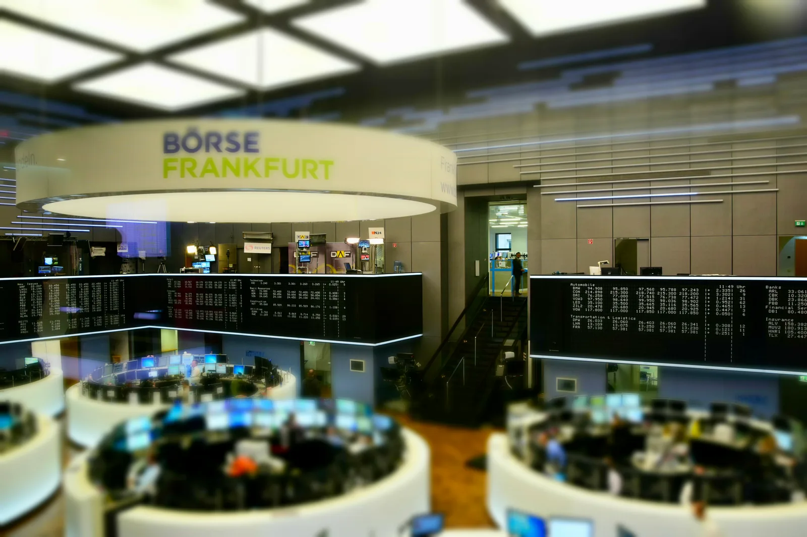

Player International Fund
Own capital invested in multi-asset investment portfolios. Capital assets managed by global advisory & specialised teams.
Fund snapshot
Investment objective
Absolute return (multi) strategies. Global Market neutral strategies aim to provide positive absolute returns regardless of the underlying market direction across a range of macroeconomic scenarios, mitigating exposure to market risk – the effect on an investment from the movement of the market as a whole.
Strategy
Sponsor led, Qualified & Accredited Own Capital (in-house) and global Third-Party (external) institutional investment LP capital assets, managed by Advisory and globally based teams spreading capital across portfolios. Adding a 20% alternatives allocation (55% Equities & 25% FI 'traditional' allocation) to Market Neutral portfolio construction helps maintain an attractive and comparative return profile whilst reducing volatility and maximum drawdown.

Photo: Ank Kumar, Wikimedia Commons, CC BY-SA 4.0
Return objectives
Absolute return (multi) strategies.
Global Market neutral strategies aim to provide positive absolute returns regardless of the underlying market direction across a range of macroeconomic scenarios. Portfolio construction mitigates exposure to some specific forms of risk, notably "market risk" – the effect on an investment from the movement of the market as a whole.
Our growth & income equity "net-zero market exposure" allocations are prepared for scenarios reflecting investors’ lack of conviction in the path of macroeconomic growth, given post-COVID-19 era inflation, interest rate, and earnings trends.
Equity strategy sensitivity to potential outcomes given varying economic scenarios. Historical analysis of change over time, causality, context, complexity & contingency determines that underlying assets displaying 'quality factors' performed well in all three environments. In a world of higher inflation and interest rates, our analysis informs our belief that underlying blue-chip sub-funds with quality features will continue to deliver due to their focus on balance-sheet strength, earnings growth, and profitability improvements, which underpin financial resilience.
Investment strategies
Adding a 20% alternatives allocation (55% Equities & 25% FI 'traditional' allocation) to Market Neutral portfolio construction helps maintain an attractive and comparative return profile whilst reducing the volatility profile and the maximum drawdown.
Blue chip growth
Blue chip growth companies are firms that are well established in their industries and have the potential for above-average earnings growth. The fund compartment focuses on sub-funds with leading market positions, seasoned management, and strong financial fundamentals.
Income
LDI mandate & income investment strategy seeks to match the sensitivity of income compartment assets to reference interest rate or inflation to that of LP investors’ pre-defined liabilities (yield 'lock-in'). Specifically designed to help LPs meet future ('locked-in' yield) liabilities.
Income focused 'Dedicated Portfolio' compartment offers return consistency & the ability to meet LP cash-flow & capital return requirements, with portfolio construction following two main approaches: cash flow matching & duration matching, to match fixed-income assets with multiple LP future liabilities.
Alternatives
Alternatives strategies are considered either as part of diversified portfolio alternatives allocation, used to augment equity & FI allocation. In either event, the goal is an aggregate increase in diversification, reducing risk as measured by volatility and drawdown, whilst retaining instrument specific risk.
Business Development Corporation
Patient Venture Capital Strategy: longer-term investments concerned with tax-adjusted returns from dependable regular preference series dividends and the potential for special dividends.
Long-term capital appreciation
Common stock Series – increasing stock values, growing 'lower volatility' equity investments for NAV per share growth and the potential for realised gains to pay special dividends.
- Single-asset, or ‘specialist’ mandates: which focus on a specific asset class or geographical region.
- Multi-asset, or ‘balanced’ mandates: which cover a number of asset classes and regions.
Creating portfolio value
By monitoring risk exposures within underlying funds, our portfolio managers implement a market neutral strategy across macroeconomic & geopolitical paradigm shifts. In such a fluid environment, we focus on long-term investment outcomes by creating balanced allocations of different equity strategies, which can unlock diverse growth & income opportunities based on 'quality stocks' with stable trading patterns to cushion downsides.
Our market neutral strategy to portfolio allocations & composition, over the traditional blue chip 60/40 equity/bonds portfolio, offers diversification benefits and helps improve each compartment’s portfolio risk/return profile to achieve a smoother long term ride for RAIF investors.
Outcome-orientated investment management
A pathway to stable, consistent returns, asset growth and evolution.
Insulation from market volatility
When markets are unpredictable, a zero beta neutral portfolio strategy provides a safe haven. Its value doesn’t depend on broader trends, making it ideal for times of economic uncertainty.
Consistent returns & evolution of assets
The reliability of steady returns makes the strategy especially appealing for value creation & wealth preservation.
Reduced stress
A net-zero beta portfolio offers portfolio focus on efficient portfolio growth & evolution targets without the noise of short-term volatility, reducing annualized volatility.
Portfolio stability
To build a long-term financial foundation, our global markets’ neutral portfolio strategy provides a stable anchor, even as other parts of the market experience turbulence, creating optimal conditions for consistency of annualized returns & yields.
Force multiplier
- Clean-up & consolidate: underlying holdings and strengthen manager due diligence.
- Strategic design: inbuilt portfolio anchors & levers for diversification, cost, risk & tax efficiency.
- Tactical asset allocation model review: adjust models with analyses and guidance as markets change and objectives evolve (dynamic threshold rebalancing).
Risks
All investments are subject to market risk, including the possible loss of principal.
Growth investing: the growth compartment approach could cause it to underperform other stock funds that employ a different investment style.
Dividend-paying stocks: the income compartment's emphasis on dividend-paying stocks could cause it to underperform similar funds that invest without consideration of a company’s track record of paying dividends.
Large- and mid-cap stocks: the BDC portfolio invests in unlisted debt & equity securities issued by qualifying large- and mid-cap companies. These tend to be less volatile than securities issued by small-cap companies. However, large-cap companies may not attain the high growth rates of successful small-cap companies, especially during strong economic periods, and may be unable to respond as quickly to competitive challenges.
See the offering document for more detail on the fund’s principal risks.
Registered investors, go further
Full portfolio construction data, asset allocation ranges and mandate documents are available to registered investors in the client portal.